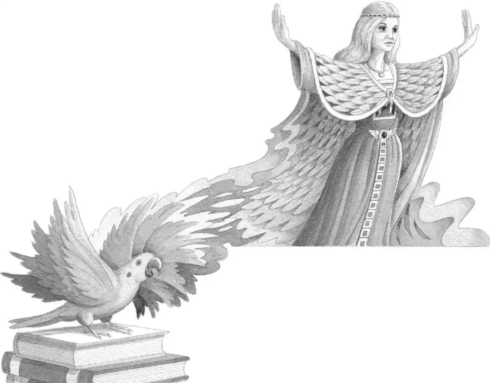

Drip, drip.
Jack opened his eyes.
Rain was dripping from the leaves of the tree.
They were back in Frog Creek. The rain was softer. The wind was gentler. The air was sweeter.
“Oh man.” Jack sighed. “That was close.” He was still holding the gold medallion.
“Polly’s gone,” said Annie sadly. “I was hoping she might come back with us.”
“No magic creature has ever come back with us,” said Jack.
He pulled off his backpack. It was damp with rain and saltwater.
Jack took out the pirate book. He put it on the stack of books. On top of the dinosaur book. And the knight book. And the mummy book.
Then Jack put the gold medallion beside the bookmark with the letter M.
Next he went down onto his knees. And ran his finger over the shimmering M on the floor. “We didn’t find any M’s on this trip,” he said.
“Or the M person,” said Annie.
Squawk!
“Polly!” Annie cried.
The parrot swooshed into the tree house. She perched on the stack of books.
Polly looked straight at Jack.
“What—what are you doing here?” he asked her.
Slowly Polly raised her bright green wings. They grew bigger and bigger until they spread out like a huge green cape.
Then, in a great swirl of colors—in a blur of feathers and light—in a flapping and stretching and screeching—a new being took shape.

Polly was not a parrot any longer. In her place was an old woman. A beautiful old woman with long white hair and piercing eyes.
She wore a green feathered cape. She perched on the stack of books. And she was very calm and very still.
Neither Jack nor Annie could speak. They were too amazed.
“Hello, Jack. Hello, Annie,” the old woman said. “My name is Morgan le Fay.”